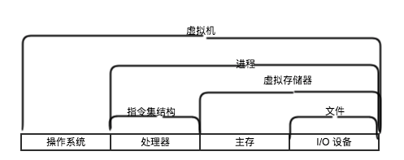
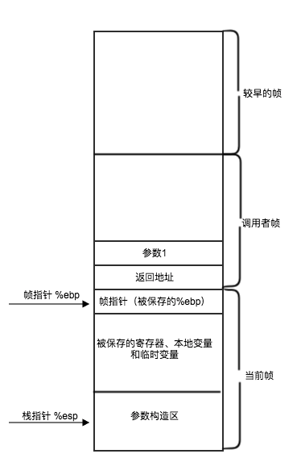

CSAPP(深入理解计算机系统)
计算机系统漫游
- 代码从文本到可执行文件的过程（c语言示例）：
- 预处理阶段，处理 #inlcude
， #define MAX 100 - 编译阶段：将文本编译成汇编程序，hello.s
- 汇编阶段：汇编器将上一步的程序翻译成机器指令。hello.o
- 链接阶段就：hello 中调用的printf函数，而函数存在一个printf.o 单独的编译完成文件，需要以某种方式合并到hello.o 中。
- 预处理阶段，处理 #inlcude
- 系统的硬件组成
- 总线
- I/O设备
- 主存
- 处理器， 指令集合： 加载(复制内容到寄存器）， 存储（从寄存器到存储），操作（加减乘除等计算）， 跳转（覆盖程序计数器PC的数值，执行代码跳转）
- 缓存， 高速缓存
- 操作系统如何管理硬件
- 任何的硬件通过操作系统提供服务， 所有应用程序都是建立在操作系统之上的。
- OS 的基本功能： 1. 方式硬件被滥用， 2. 提供一套简单一致的机制来控制复杂度而又大相径庭的低级硬件设备。
- OS 的抽象： 文件 -> IO， 虚拟存储器 -> 主存+磁盘， 进程 -> 处理器，主存，IO设备的抽象
- 抽象
- 进程： 计算机科学中最重要并且成功的概念。
提供一种假象， 好像系统上只有这个程序在运行，看上去只有这个程序在使用处理器、主存、和IO设备. 这是通过处理器在进程间切换来实现的。 操作系统实现这种交错执行的机制为 上下文切换, 实现进程这个抽象概念需要低级硬件和操作系统软件之间的紧密合作。
- 进程： 计算机科学中最重要并且成功的概念。
- 线程：每个线程都运行在进程的上下文中，并共享同样的代码和全局数据，服务器对于并行处理的需求，导致线程编程成为越来越重要的编程模型， 一般来说，多线程之间更容易共享数据，也比进程更轻量。
- 虚拟存储器： 为进程提供了一个抽象、一致的存储空间，称为虚拟地址空间。包括： 程序代码和数据，堆，共享库，栈，内核虚拟存储器。
- 文件： 字节序列。包括磁盘，键盘，显示器，网络，都可以视为文件。
- 并行跟并发的区分： 并发: 好像 同时具有多个活动在系统中。 并行：真正的并行。
- 抽象： 抽象的使用是计算机科学中最为重要的概念之一，因为，程序员无需了解它内部的工作变可以使用这些代码。在处理器中，指令集结构提供了对实际处理器硬件的抽象。机器代码程序表现的好像是运行在一个一次执行一条指令的处理器上。底层的硬件币抽象描述的要复杂精细的多，它并行的执行多条指令，但又总是与那个简单有序的模型保持一致。

计算机系统中一个重大的主题就是 提供不同层次的抽象表示，来 隐藏实际实现的复杂性
信息的表示和处理
因为只是介绍了二进制、无符号数、有符号数、以及小数的表示方法， 计算机教程中都有介绍，所以省略不写了。只是简单的摘录重要的。
- 在相同长度的无符号和有符号整数之间 进行强制类型转换时候，大多数C语言实现遵循 原则是 底层的位模式不变。而是改变位的解释方法。
- 编码的存储长度有限。可能导致数值溢出。需要非常注意。
- 整数和浮点数的表示方法，有所区别，导致， 整数可以进行移位、结合等优化方法，但是浮点数则不行，如 x * y * z 不等于 y * z * x 需要注意
程序的机器级别表示
精通细节是理解更深和更基本概念的先决条件， 所以魔鬼隐藏在细节之中。*
- 机器代码的产生过程
机器代码， 用字节序列编码低级的操作，包括处理数据、管理存储器、读写存储设备上的数据、以及利用网络通信。 编译器机基于编程语言的原则、目标机器的指令和操作系统遵循的原则， 经过一系列的阶段产生机器代码。GCC C语言编译器以汇编代码的形式产生输出，然后调用 汇编器和链接器从而根据汇编代码生成可执行的机器代码。
- 抽象：
- 指令集体系结构（ISA）： 屏蔽了处理器的硬件实现，将指令的执行描述为，简单的顺序执行(处理器的硬件远远比描述的精细复杂)
- 存储抽象： 抽象成一个大的字节数组，存储器的实现是，将多层硬件存储器和操作系统软件的结合
- 主要内容：
- 了解C语言中的控制结构， 比如if while switch 语句的实现方法。
- 过程的实现， 包括程序如何维护一个运行栈来支持过程间数据和控制的传递以及局部变量的存储
- 数组、结构、联合这样的数据结构的实现方法
- 指令集：
- 指令操作数
- 源数据： 常数、寄存器、存储器
- 类型： 立即数（常数）、寄存器、存储器
- C 语言的指针就是地址，间接引用指针就是将该指针放在一个寄存器中，然后在存储器引用中，使用这个寄存器， 局部变量通常保存在寄存器中。
- 数据传送指令: mov
- 算数逻辑操作： add， sub， imul， sal， shl， leal, imull, mull, idivl, divl
- 控制：条件码，跳转指令，test, sete, sets, setg etc, cmp, jmp, 条件码一般使用比较、算数、直接设定三种方式， 跳转指令则利用，条件码来进行跳转或者间接跳转
- 栈： push, pop
- C 语言 控制结构 汇编表示
-
while, for 一般是先将 for 循环转变为等价的 while 循环，while 循环 套用固定的汇编代码 模式。
do body-statement while(test-expr) loop: body-statement t = test-expr; if(t) goto loop; done: while(test-expr) body-statement t = test-expr; if(!t) goto done; loop: body-statement t = test-expr; if(t) goto loop; done: -
switch 的实现
使用跳转表 实现，来达到 执行时间跟 开关数量无关。 -
条件传送指令
因为现代处理器的流水线设计，导致在条件判断时候，才能确定下一条执行指令的位置，而导致按照顺序执行 准备的代码可能被抛弃，而对应的准备工作则变为了浪费。 而 条件传送 指令先计算出条件操作的两种结果，然后根据条件来选择满足的结果。从而避免了 因为跳转指令 带来的资源浪费。另一方面现代处理器都采用了 分支预测 逻辑，来试图猜测每条跳转指令是否被执行。（处理器设计试图达到 90%的正确率），正确的预测可以没有代价，然而额错误的预测则会带来严重恩惩罚，大约 20-40 的时钟周期的浪费，导致性能严重下降。
举例： 例如简单 三目运算符， x > y ? x+y : x-y, 当两个表达式具有副作用的时候则不能应用。
-
- 结构实现:
- 数组分配和访问： 基本实现为, 在存储器中分配一个连续的 T A[N], L * N 字节的连续大小的空间。 L为T类型的字节大小。而C语言中数字指针的实现（ptr ++ ）则实现为单纯的 地址运算。嵌套数组 则以 行优先、列优先 的方式进行展开。
- Struct 的实现， 变量为 首地址 + 偏移量。
- 数据对齐： 计算机系统对 基本数据结构类型的大小做了限制，8的倍数等。这种 对齐限制，简化了 处理器和存储系统之间的硬件设计。
- 过程实现
过程调用 包括数据传递（过程参数、返回值）、控制跳转。在进入是为过程的局部变量分配空间，并在退出时候释放这些空间。-
简单指令:
转移控制： call, leave, ret.
call: 将返回地址入栈（call之后的下一条命令的地址） 2. 跳转到被调用的过程处。
ret： 从栈中弹出地址，并跳转到此位置。需要将栈指针指向call指令存储的放回地址的位置（需要自己控制）
leave: movl %ebp, %esp; popl %ebp 为ret 返回做好准备工作如果使用整数，指针作为返回值的话，可以使用%eax传递。（其他的呢？）
寄存器使用： 寄存器是计算中公用的资源。为了保证 被调用者不会覆盖调用者时候用的寄存器的数值。需要遵守规范。
%eax, %edx, %ecx 调用者保存寄存器， %ebx, %esi, %edi 被调用者保存寄存器。 需要调用者与被调用者配合来保护共享的寄存器内容。 -
实现过程:
函数调用过程的两个寄存器 %ebp(帧指针), %esp（栈指针） 帧指针保存当前过程的最高位置，%esp则向下增长， 用于分配必要的地址空间，调用函数参数等。 在调用时， 首先压入调用参数，返回地址， 压入%ebp, 调用后，将 %ebp 重置为当前的%esp， 标记确定当前的 函数的最高地址。返回时, movl %ebp, %esp; popl %ebp; ret; 恢复调用函数之前的样子。天生的具有递归属性。

- 什么时候需要帧指针:
- 局部变量太多，不能都存在在寄存器中
- 有些局部变量是数组或者结构
- 函数用取地址操作符&，来计算一个局部变量的地址
- 函数必须将栈上的某些参数传递到另一个函数
- 在修改一个被调用者保存寄存器之前，需要保存它的状态
- X86-64 中对于过程的 一些具体优化：
- 参数通过寄存器传递到过程，而不是在栈上，消除了在栈上存储和检索值的开销
- call 指令将一个64位的返回地址存储在栈上
- 许多函数不需要栈帧，只有那些不能将所有局部变量存储在寄存器中的函数才需要在栈上分配空间
- 没有帧指针，作为替代，对栈位置的引用相对于栈指针。
-
- C 语言 指针
- 每个指针都对应一个具体的类型： 指针类型不是机器代码中的一部分，C语言提供的一种抽象，地址运算，来避免寻址错误。
- 每个指针都有一个值， 这个值是某个指定类型对象的地址。
- 指针用& 运算符创建
- 运算符 * 用于指针的 间接引用
- 数组与指针紧密关联
- 指针类型转换： 只改变类型，而不是值
- 指针可以指向函数，之函数机器代码中的 第一条 指令地址。将
C语言跟汇编指令 的差别很大，在汇编语言中，各种数据类型之间的差距很小，程序以指令序列来表示。每条指令是一个单独的操作。编译器必须提供多条指令来产生和操作各种数据结构，来实现像条件、循环、和过程这样的控制结构、抽象机制。